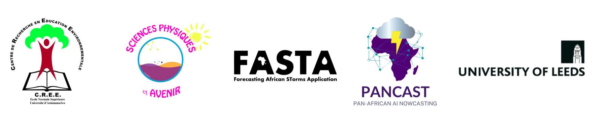

Pendant cinq jours, les participants découvriront les bases de la programmation, la manipulation et la visualisation de données, puis la création de modèles de régression et de classification. Des exemples issus de différents domaines scientifiques illustreront l’utilisation de ces outils dans la recherche.
Au programme
- Découvrir Python et les notebooks Jupyter.
- Utiliser les variables, les listes, les conditions et les boucles.
- Comprendre les fonctions, les classes et les objets.
- Manipuler et visualiser des données avec NumPy, pandas et Matplotlib.
- Entraîner et évaluer des modèles de régression et de classification avec scikit-learn.
- Réaliser un mini-projet en groupe et présenter ses résultats.
Les séances alternent cours, exercices d’application et travail en groupe. Un atelier consacré aux CV, aux lettres de motivation et aux bourses à l’étranger est également prévu le mardi. Le jeudi, une conférence sera organisée dans le cadre de la célébration de la World Space Week.
Consulter le programme détaillé
Informations pratiques
- Dates : du lundi 12 au vendredi 16 octobre 2026.
- Horaires : de 09h00 à 17h00.
- Lieu : Labo Malagasy, ENS Ampefiloha, Antananarivo.
- Matériel : apporter un ordinateur portable et son chargeur.
Contact
Pour toute question concernant l’atelier, contactez Mendrika Rakotomanga : mmmhr@leeds.ac.uk.
Partenaires
